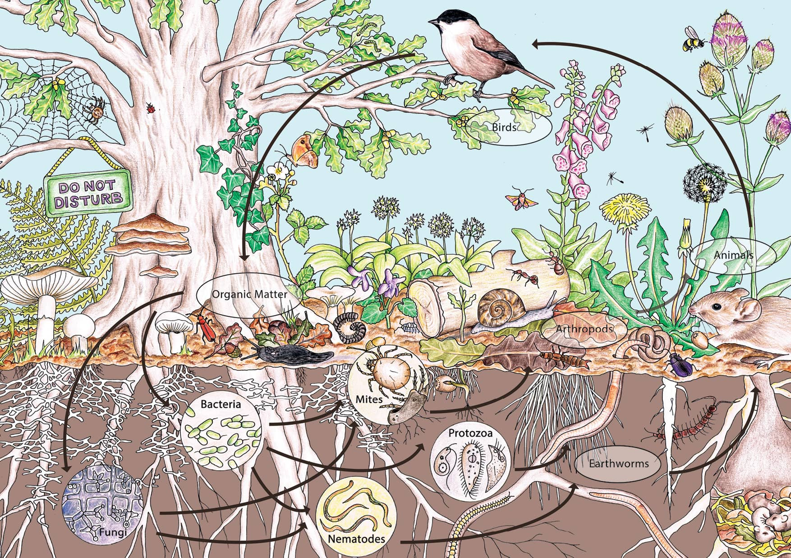
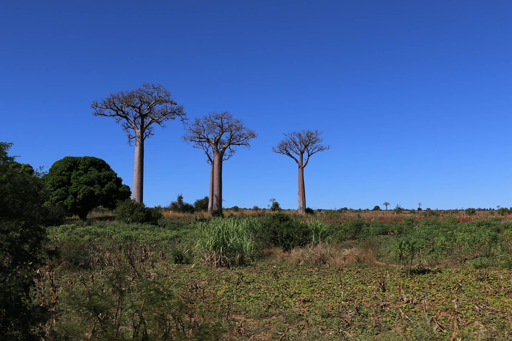
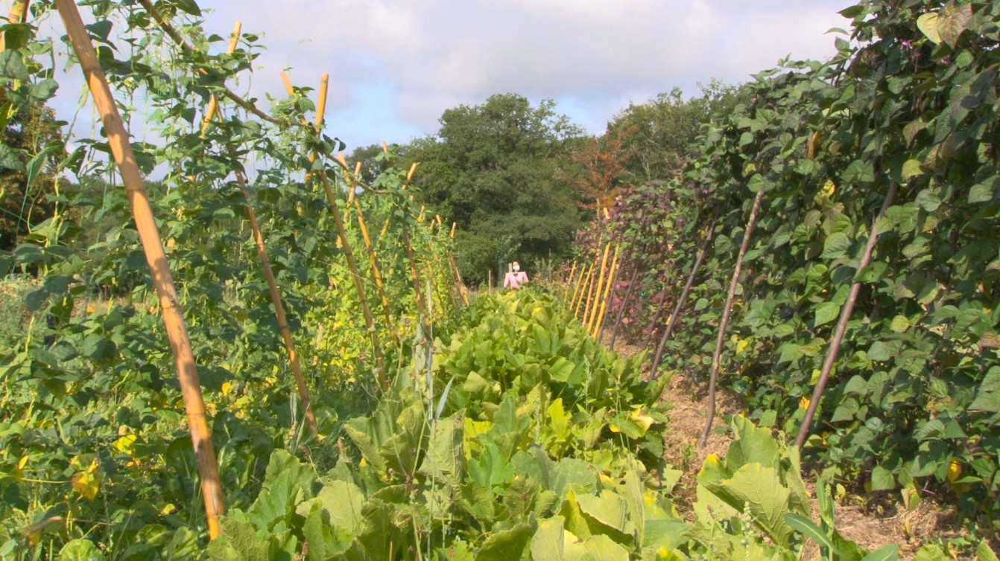

La permaculture: c'est quoi ?
La permaculture a été théorisée par un biologiste, Bill Mollison, et un essayiste, David Holmgren.
Leur concept est inspiré d’un agriculteur japonais du nom de Masanobu Fukuoka. D’après la définition de Larousse, la permaculture est « un mode d’agriculture fondé sur les principes de développement durable, se voulant respectueux de la biodiversité et de l’humain et consistant à imiter le fonctionnement des écosystèmes naturels. »
La permaculture est donc une conception qui se base sur l’observation de la nature afin de reproduire ses modèles et ses relations. Cependant, cette définition ne s’attarde que sur la définition étymologique de la permaculture, terme né de l’association des mots « permanente » et « agriculture ».
Notre action
Notre objectif est d'apprendre, à un groupe d'agriculteurs volontaires, une autre façon de cultiver respectueuse envers la biodiversité avec beaucoup moins d'efforts et de besoin financier.
Le labour, la monoculture, les vergers d'un coté et le jardin potager de l'autre sont des techniques apparues dans les années 1960 pendant la révolution Verte.

Les techniques de permaculture démontrent que nous pouvons tous mélangés : maraichage, arbres fruitiers, arbre d'ornement, fleurs pour maintenir un micro climat, et une biodiversité qui aide et favorise les cultures.
Secteur Géographique
Nous avons choisi Madagascar et plus exactement le sud du pays. Le climat est rude, il y a une desertification qui s'y installe, une déforestation importante.
Notre association Sakafo Ny Ala, qui siginifie la nature qui donne de la nourriture, a pour but d'apprendre les techniques de base de la permaculture : observer le terrain et les signes, soigner les cultures par des macérations d'herbes et de feuilles avec Zéro pesticides et zéro fongicides et bien d'autres actions...
Cependant en zone aride et tropicale, les techniques permaculturales doivent être adaptée. Nous avons décidé de créer deux zones d'expérimentation :
-
 un petit terrain en zone Urbaine sur la ville de Toliara
un petit terrain en zone Urbaine sur la ville de Toliara - Un terrain de 5 hectares sur la ville
de Ambolimaka, proche de la mer.